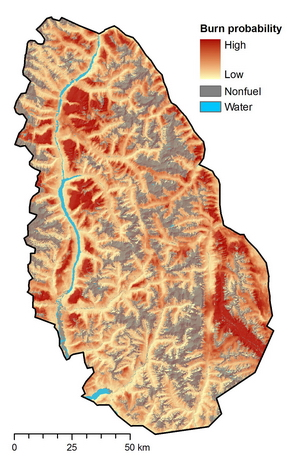

Overview
Burn-P3 (probability, prediction, and planning) is a spatial fire simulation model that is used for land-management planning and wildland fire research. It uses the Prometheus fire-growth engine to simulate the ignition and spread of a very large number of fires. The inputs to Burn-P3 consist of fuels (e.g., vegetation), topography, weather, and patterns of fire ignitions. Its main output is a surface of fire probabilities, or burn probability map.
The Canadian Forest Service is the lead agency, custodian and legal intellectual property rights holder of Burn-P3
- Windows-based software application
- Computes burn probabilities for large landscapes
- Produces additional outputs, such as fire intensity maps
- Extracts fire statistics and simulated fire perimeters